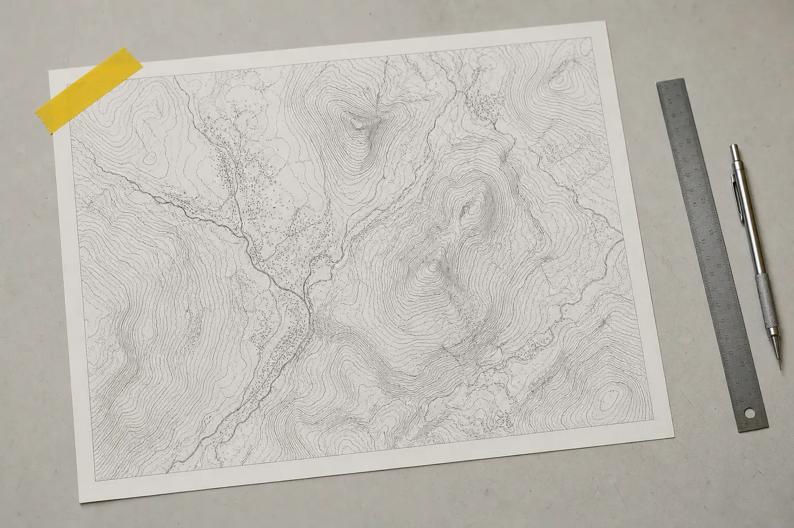
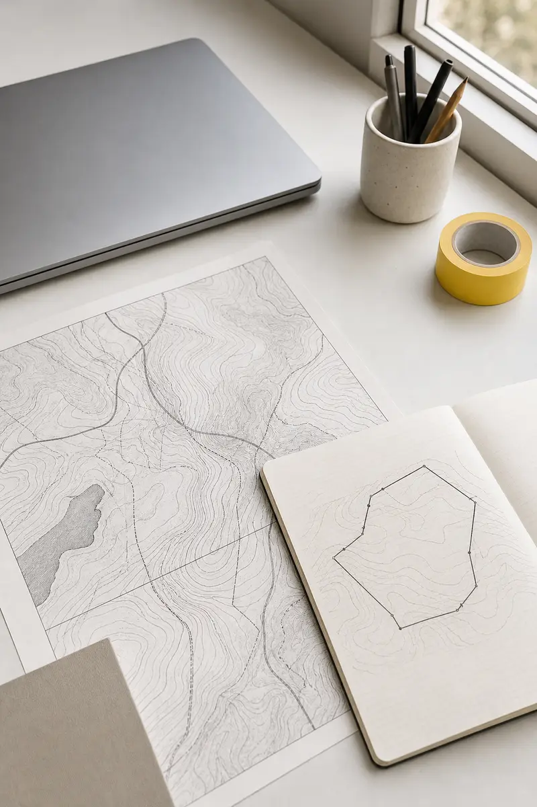

Relevés
Descendez : chaque image apparaît en points tramés (matrice de Bayer 4x4) puis se résout en image réelle. Les images déjà visibles au chargement ne sont pas animées.





Descendez : chaque image apparaît en points tramés (matrice de Bayer 4x4) puis se résout en image réelle. Les images déjà visibles au chargement ne sont pas animées.

